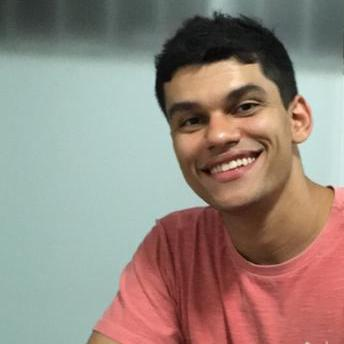

Augusto de Carvalho Mourão

Sobre mim:
Natural e residente em Belo Horizonte/MG, Brazil.
Graduando em Engenharia de Produção Civil-CEFET-MG e estudante de Desenvolvimento Web pela Trybe.
Habilidades:
- Amigável;
- Facilidade para trabalhar em grupo - Experiência em estágio na Prefeitura de Belo Horizonte, onde a maior parte das atividades necessitava de trabalhar em grupo;
- Rápida adaptação para aprender coisas novas;
- Capacidade analítica;
- Inglês.
Link para minha foto
Recomendo este Blog!